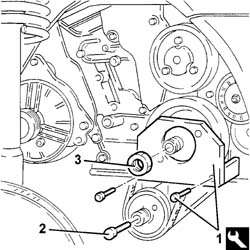
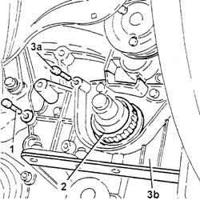
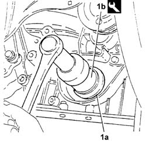

1084B23 OIL PUMP IDLER DRIVE GEARS AND CHAIN - R.R.
- Path
- Procedures > 10 ENGINE > 1084 ENGINE LUBRICATION > 1084B ENGINE OIL LUBRICATION CIRCUIT > 1084B23 OIL PUMP IDLER DRIVE GEARS AND CHAIN - R.R.
- Kind
- repair procedure (removal / refitting; the operation number is the code)
- Applies to
- engines: 3.0 V6, 3.2 V6; all production periods
- Interactive page
- https://sloeber94.github.io/elrnDB-lThss/en/#/214213
Applies to: engines: 3.0 V6, 3.2 V6; all production periods
 Removing
Removing
 Refitting
Refitting- Position the vehicle on the lift.
- [7040D12]
See in Op. 7040D30 Engine compartment FRONT CROSSMEMBER COVER - R.R.
-
- [7040D14]
- [7055B39]
- [7055A43]
- [7055A41]
- [7055B10]
- [4050B10]
See in Op. 7055B42 FRONT WHEEL ARCH LINER (one), left or right - R.R.
See in Op. 7055B54 PROTECTION/GUARD under engine - R.R.
See in Op. 7040D50 ENGINE COMPARTMENT UPPER SOUND INSULATION SHIELD - R.R.
- [1076B52]
See in Op. 2710A31 INTERMEDIATE DRIVE SHAFT - R.R.
See in Op. 1092G10 Engine components single drive BELT - R.R.
See in Op. 1092G20 Engine components single belt FIXED TENSIONER - R.R.
See in Op. 1008C10 Power unit REACTION ROD - Replace
See in Op. 1008C16 BRACKET on BODY for reaction link - R.R.
See in Op. 1008A44 RIGID REAR power unit MOUNTING - R.R.
See in Op. 1020A20 CRANKCASE SUMP - R.R. clean contact surfaces and apply sealant
1. Fit the crankshaft lock.
 | Description | Code | Function |
|---|---|---|---|
1 | Counter-torque for crankshaft | 1.870.646.000 | Lock the rotation of the crankshaft |
2. Undo the bolt fixing the drive chain to the engine oil pump.
3. Undo the nut fixing the crankshaft pulley.

Applies to: engines: 3.0 V6, 3.2 V6; all production periods
1. Release the drive chain (1a) from the engine oil pump using the tool (1b).
| Description | Code | Function |
|---|---|---|---|
1 | Extractor | 1.860.954.001 | Tool for extracting chain from engine oil pump |
Applies to: engines: 3.0 V6, 3.2 V6; all production periods
1. Remove the flywheel lock.
| Description | Code | Function |
|---|---|---|---|
. | Counter-torque for crankshaft | 1.870.646.000 | Lock the rotation of the crankshaft |
- Remove the crankshaft drive pulley.
1. Undo the lower bolt fixing the alternator mounting.
2. Remove the toothed drive pulley
3. Undo the bolts (3a) and remove the crankshaft oil seal front cover (3b) complete with oil seal.
- Remove the gasket.

Applies to: engines: 3.0 V6, 3.2 V6; all production periods
- Release and remove the oil pump idler gears and chain.
Applies to: engines: 3.0 V6, 3.2 V6; all production periods
Refitting
Removing- Place the oil pump idler gears and chain in their housing.
- Release the oil seal from the crankshaft oil seal front cover.
- Fit the crankshaft oil seal front cover complete with a new gasket and tighten the bolts to the recommended torque.
 | Value - daNm | Fastening | Component | Ø |
|---|---|---|---|---|
. | (Engine crankcase side) 0.7 - 0.9 | Bolt | FRONT COVER CRANKSHAFT | M6 |
1. Fit the crankshaft front oil seal (1a) using the tool (1b).
| Description | Code | Function |
|---|---|---|---|
1b | Fitting tool | 1.860.949.000 | Tool for fitting oil seals |

Applies to: engines: 3.0 V6, 3.2 V6; all production periods
- Fit the toothed drive pulley
Applies to: engines: 3.0 V6, 3.2 V6; all production periods
- Fit the lower bolt fixing the alternator mounting.
- Place the crankshaft drive pulley back in its housing.
- Fit the crankshaft lock.
| Description | Code | Function |
|---|---|---|---|
. | Counter-torque for crankshaft | 1.870.646.000 | Lock the rotation of the crankshaft |
- Tighten the nut fixing the crankshaft pulley to the recommended torque.
| Value - daNm | Fastening | Component | Ø |
|---|---|---|---|---|
. | (Engine crankcase side) 20.0 -24.7 | Nut | CRANKSHAFT PULLEY | M28 |
- Place the drive chain on the oil pump back in its housing and tighten the bolt to the recommended torque.
| Value - daNm | Fastening | Component | Ø |
|---|---|---|---|---|
. | (Engine oil pump side) 4.3 - 5.3 | Bolt | ENGINE OIL PUMP DRIVE CHAIN | M10 |
- Remove the crankshaft lock.
| Description | Code | Function |
|---|---|---|---|
. | Counter-torque for crankshaft | 1.870.646.000 | Lock the rotation of the crankshaft |
See in Op. 1020A20 CRANKCASE SUMP - R.R. clean contact surfaces and apply sealant
See in Op. 1008A44 RIGID REAR power unit MOUNTING - R.R.
See in Op. 1008C16 BRACKET on BODY for reaction link - R.R.
See in Op. 1008C10 Power unit REACTION ROD - Replace
See in Op. 1092G20 Engine components single belt FIXED TENSIONER - R.R.
See in Op. 1092G10 Engine components single drive BELT - R.R.
See in Op. 2710A31 INTERMEDIATE DRIVE SHAFT - R.R.
- [1076B52]
See in Op. 7040D50 ENGINE COMPARTMENT UPPER SOUND INSULATION SHIELD - R.R.
See in Op. 7055B54 PROTECTION/GUARD under engine - R.R.
See in Op. 7055B42 FRONT WHEEL ARCH LINER (one), left or right - R.R.
- [4050B10]
- [7055B10]
- [7055A41]
- [7055A43]
- [7055B39]
- [7040D14]
See in Op. 7040D30 Engine compartment FRONT CROSSMEMBER COVER - R.R.
- [7040D12]
- Remove the vehicle from the lift.
Topics linked from this page (11)
- 1008A44 RIGID REAR power unit MOUNTING - R.R.
- 1008C10 Power unit REACTION ROD - Replace
- 1008C16 BRACKET on BODY for reaction link - R.R.
- 1020A20 CRANKCASE SUMP - R.R. clean contact surfaces and apply sealant
- 1092G10 Engine components single drive BELT - R.R.
- 1092G20 Engine components single belt FIXED TENSIONER - R.R.
- 2710A31 INTERMEDIATE DRIVE SHAFT - R.R.
- 7040D30 Engine compartment FRONT CROSSMEMBER COVER - R.R.
- 7040D50 ENGINE COMPARTMENT UPPER SOUND INSULATION SHIELD - R.R.
- 7055B42 FRONT WHEEL ARCH LINER (one), left or right - R.R.
- 7055B54 PROTECTION/GUARD under engine - R.R.